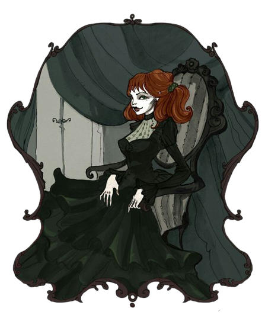

Gökten inen kara melekler gibi siyah dumanlar eşliğinde kondular Kilisenin avlusuna. Mahşer gecesi melekleri misali karanlığın içinde daha karanlık bulutlar halinde.
Seth Carter mezarlık halinde düzenlenmiş avludaki rahibe asasını doğrultup
Stupefy büyüsüyle sarstı çelimsiz rahibin dünyasını. Rahip birkaç takla atarak arkaya savrulmuş ve mezar taşlarından birisine çarpıp taşın kırılmasına sebebiyet vermişti. Yalnız, çıkan gürültü dikkat çekiciydi. Işıkların vurduğu kilise pencerelerinde bir takım gölgelerin koşuşturmaya başladığını fark etmişti. Biraz talihsizliğin de yol açtığı bir gürültü, gizlice yaklaşma planlarını sekteye uğratacak gibiydi.
Meredith mezarlığa girip Seth'in arkasından yaklaşmış ve koruma büyüsü yapmıştı. Ancak Seth'in büyüsüyle savrulan rahip başını mezar taşına vurma etkisiyle çoktan bayılmıştı. Meredith mezarlar arasında yürürken mezar taşlarının arasına gerilen tuzak tellerinden birkaçına denk gelmiş ve tuzakları aktive etmişti. Mezar taşlarının birkaç tanesinin üzerinde otomatik olarak beliren arbaletler birbiri ardına oklarını Meredith'e sallamış ancak kadının koruma kalkanını geçememişti. Aynı anda pencerelerden fırlayan oklar ve ateş eden tabancaların sesleri duyuluyor, mermiler ve oklar Meredith'in kalkanından sekiyor ve hem kızıl saçlı kadını hem de Seth Carter'ı koruyordu. Kalkandan seken oklardan birkaçı yere düşmüş ve yerdeki çalıları ateşe vermişti. Mezarlıktaki çalılar alev alırken, Meredith ve Seth'i görülmesini engellercesine büyüyen bu ateş, kilisenin içerisine ilerlemeleri için imkan tanıyacaktı ikiliye.
Cornelia'nın bombardası kalın tahta kapıyı havaya uçururken yerden tutam tutam kızgın kum kaldıracaktı. Belli ki yere, cadıların geçememesi için kızgın kum dökmüşlerdi. Savrulan kızgın kumlarla yanmadan kapı girişinden girmek, bakanlık çalışanları ve seherbazları zorlayacak gibiydi. Talihinin de yardımıyla Cornelia, içeriyi kum bulutunun ardından da olsa net şekilde görebilmişti. Soldaki ve sağdaki kapılar başka odalara açılıyor, odaların içerisinde sivri şapkalı figürler hareket ediyordu. Büyük tören salonuna kadar giden bir hol ise karanlıkta bir hayli zor görünmekteydi.
Nicholas hızlıca eşiğe cisimlenivermiş ve asasını çıkararak giriş kapısına doğru bir bombarda maxima yollamıştı. Ancak yaptığı büyü çok etkili olamamış, girişte toz halinde uçuşan kızgın kumları bir nebze dağıtabilse de asasında bir çatırdamaya yol açmıştı. Asası hafif zarar görmüş gibiydi ve bundan sonra onu kullanırken daha dikkatli olması gerekecekti.
Raiden ise
Salvio Hexia yardımıyla başarılı bir koruma büyüsü yapmış, kızgın kumlara dokunmadan kapıdan içeriye girmelerini sağlayabilecek bir koruma kalkanı oluşturabilmişti. Giriş holü, artık tam karşılarında uzanmaktaydı.
[spoiler]
[/spoiler]
O sırada başka bir yerlerde...
Bay Twinkle arkasındaki kapının gürültüyle açıldığını duydu.
“Doktor tüm hazırlıkları bitirdi Lenore. Artık kan dökme zamanı!...”Kadının cırtlak sesi yankılanırken duvarlarda, Bay Twinkle da gözlerini Beyaz Gelin’den kaçırıp ellerine çevirdi. Kapkara bir kedinin yaraladığını hatırlıyordu derisini. Ancak ne bir yara, ne de bir iz, hiçbir şey kalmamıştı elinden o tırmığın eseri olan.
“Canını acıtmayacağına söz vermiştiniz ama!”“Hadi güzelim, ufak bir kan pıhtısı sadece... İşimizi görecek kadar. Fazlasını israf etmeye lüzum yok!”Bay Twinkle o cırtlak sesin sahibini hatırlıyordu. Nihayet Lenore’un yanında durduğunda ise emin oldu. Mezarlıktaki kızıl saçlı kadındı bu, beklenildiği üzere. Üzerindeki şaşalı elbisesi ve kana susamış bakışlarıyla, kıvrımlı hançerini kendisine doğrultmuştu.
[spoiler]

Jean - Kızıl Düşes
[/spoiler]
Kurumuş boğazını kısa bir öksürükle temizledikten sonra kızıl saçlı kadının şer yuvası gözlerine çevirdi bakışlarını.
“Hadi, ne duruyorsun sürtük! Muggle bozuntusu... Yobaz fahişe seni! Çekinme! Bitir işimi... Sizin gibiler ancak sandalyelere ellerini kollarını bağlayarak oturttuğunuz masumları katletmeyi bilirsiniz.” Peşinden de hınçla kadına doğru tükürmüştü fakat kurumuş boğazından çıkan tükürük elbisesine dahi ulaşamamış ve yere yapışıvermişti.
“Twinkle!” diye cıyaklayarak ayaklandı Lenore.
“Senin gibi bir beyefendiye böyle yakışıyor mu hiç? Ortalığı kirletiyorsun...”“Magıl? Sizin gibilerden bu lafı çok duyuyorum. Bizim gibiler için kullandığınız bir küfür mü yoksa? ‘Sürtük’te bırakmalıydın bodur ihtiyar. Daha acısız olabilirdi.”“Jean, hayır!”Kızıl Düşes, bir eskrim dövüşçüsünü andırır çabuklukta savurmuştu kılıcını. Bay Twinkle derisinde yanarcasına bir acı hissetti. Sonra bir kez daha... Acıdan kapattığı gözlerine rağmen, kılıcın ona değmeyecek kadar uzakta olduğunu biliyordu. Ancak, bir şekilde kesmişti vücudunu... Nasıl?
Sıcak bir sıvının bedeninden akmaya başladığını hissetti. Kollarından ve göğsünden...
“Bu kadarı kafi... Şimdilik tabi.” Zevkle gülümseyen dudakları takip etmişti Kızıl Düşes’in sözlerini.
“Acıtmayacaktın! Jean... Sen- sen çok cani bir kadınsın.”Kanlı hançerini Bay Twinkle’ın kara cübbesine silerken cevap verdi Kızıl Düşes.
“Sen de çok naifsin, güzelim.” Bay Twinkle’ın kolunu ve cübbesini kızıla boyayan kan lekelerine iştahla bakıyordu şimdi.
“Kırmızıymış... Rengi beni hayal kırıklığına uğratsa da, kim derdi ki bu cücedeki kanın bu kadar değerli olacağını... Güzelce şişeledikten sonra, yemek masamı süslemek isterdim bununla. Cemiyette dönecek dedikoduları düşünsene... Merlin’in soyunu avlayan Kızıl Düşes! Sosyetenin göz bebeği!”Küçük bünyesindeki kanlar boşalırken cübbesine ve kollarına, acıdan haykırmamak için direndi Bay Twinkle. Bu zevki kızıl şeytana tattırmayacaktı.
Not: Gelecek GM Metni 00:15'te girilecektir.